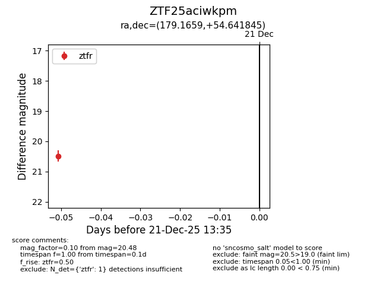
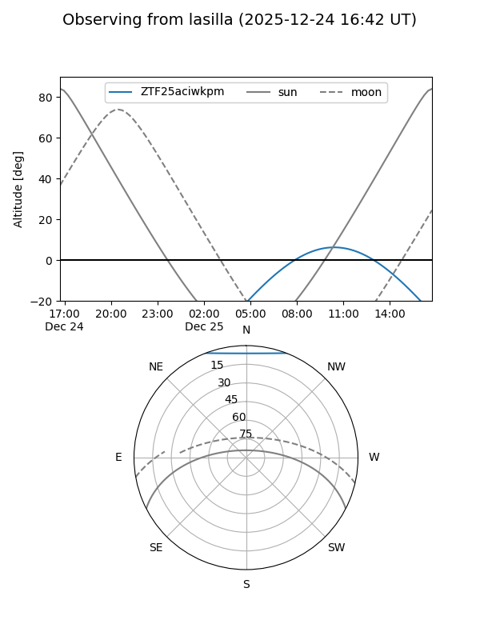
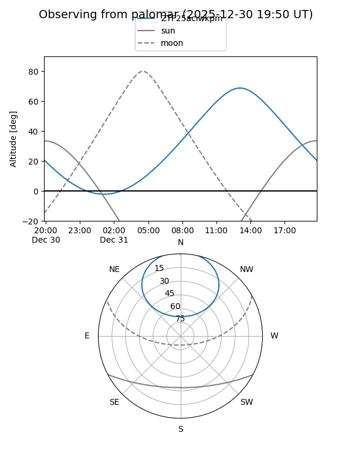
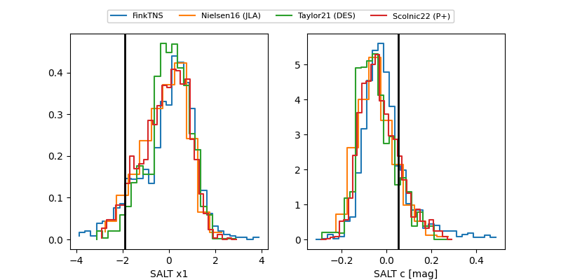

ZTF25aciwkpm
Target ZTF25aciwkpm at 2025-12-21 13:37
Aliases and brokers:
FINK: fink-portal.org/ZTF25aciwkpm
Lasair: lasair-ztf.lsst.ac.uk/objects/ZTF25aciwkpm
ALeRCE: alerce.online/object/ZTF25aciwkpm
alt names
ZTF25aciwkpm (ztf,fink_ztf)
Coordinates:
equatorial (ra, dec) = 179.1659,+54.64185
equatorial (HMS+DMS) = 11:56:39.81,+54:38:30.64
galactic (l, b) = (139.1996,+60.72257)
Flags:
Photometry:
last ztfr=20.48
1 ztfr detections
Lightcurve

Visibility


Additional plots
